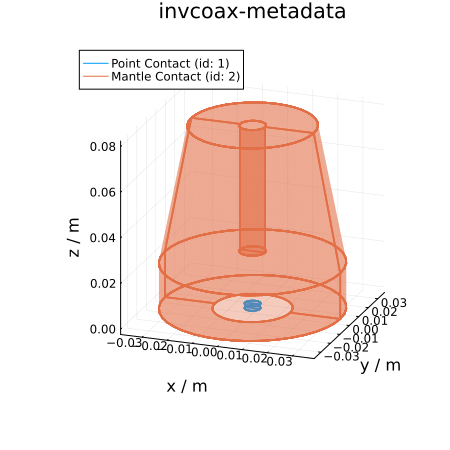

Visualize Detector Geometry
You can also download this tutorial as a Jupyter notebook and a plain Julia source file.
As input you should provide the path to a LEGEND detector metadata JSON file e.g.
detector_metadata_filename = "path/to/V04545A.json"To obtain JSONs for all LEGEND detectors you can clone the repository legend-detectors. The JSONs can be found under germanium/diodes. You may also create your custom detector JSON file as long as it follows the LEGEND detector metadata format (see README in diodes/).
Here we will use a Public Inverted Coax example JSON from LegendTestData
# Get detector metadata JSON from `legend-test-data`
using LegendTestData
ldsim_path = joinpath(legend_test_data_path(), "data", "ldsim")
detector_name = "invcoax-metadata"
detector_metadata_filename = joinpath(ldsim_path, detector_name*".json");View geometry
using LegendGeSim
using PlotsThe function LEGEND_SolidStateDetector will create an "empty" SolidStateDetector object from SolidStateDetectors.jl only for the purpose of viewing geometry. You will see information such as bias voltage, but that is irrelevant at this stage, and the fields are not simulated at this point.
detector = LegendGeSim.LEGEND_SolidStateDetector(detector_metadata_filename)
plot(detector, aspect_ratio=1.0, camera=(20,20), size=(450,450), title=detector_name)
This page was generated using Literate.jl.